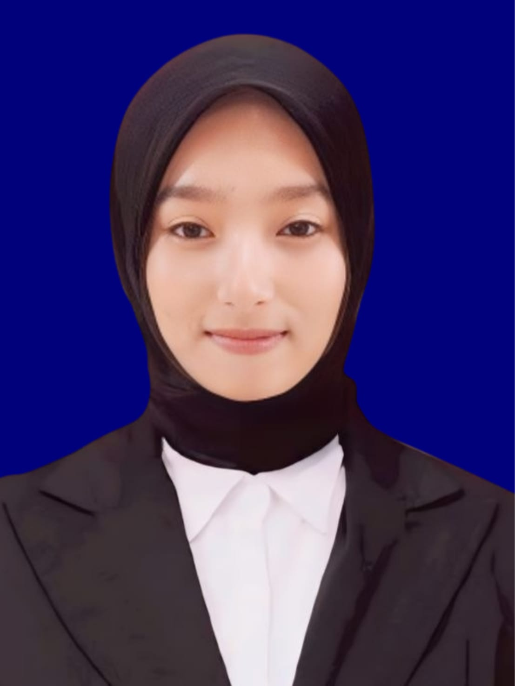

| Nama | : Fika Anjani |  |
| Alamat | : Jl. Raya Arjosari Rejoso Pasuruan |
| Tempat, Tanggal Lahir | : Pasuruan, 23 Agustus 2006 |
| Nomor Hp | : 0831-1228-6000 |
| : anjanifika232@gmail.com |
| Riwayat Pendidikan | Minat dan Hobi |
|---|---|
|
|
Pengalaman di perkuliahan saya mengikuti UKM(Unit Kegiatan Mahasiswa) ITC(Information Tecnologi Center). Mengapa saya mengikuti UKM ITC? karena saya baru masuk ke dalam dunia IT/percodingan. Meskipun itu pertama kali bagi saya dan saya juga memulai dari nol untuk belajar, saya tidak akan pantang menyerah untuk belajar lebih giat.
Saat pertama kali masuk universitas, saya merasa sangat antusias dan bersemangat. Saya bertemu banyak teman baru serta dosen yang inspiratif. Suasana akademik yang kondusif membuat saya semakin termotivasi untuk belajar.
Saya bercita-cita menjadi seorang data analis yang dapat menciptakan solusi inovatif bagi masyarakat. Saya berharap selama di universitas, saya dapat memperoleh ilmu yang mendalam dan pengalaman berharga untuk mewujudkan cita-cita tersebut.